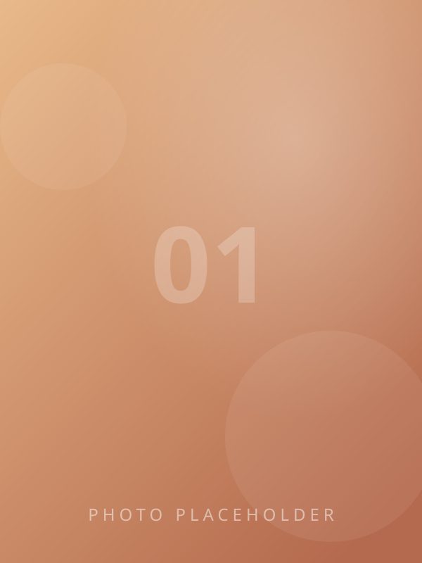
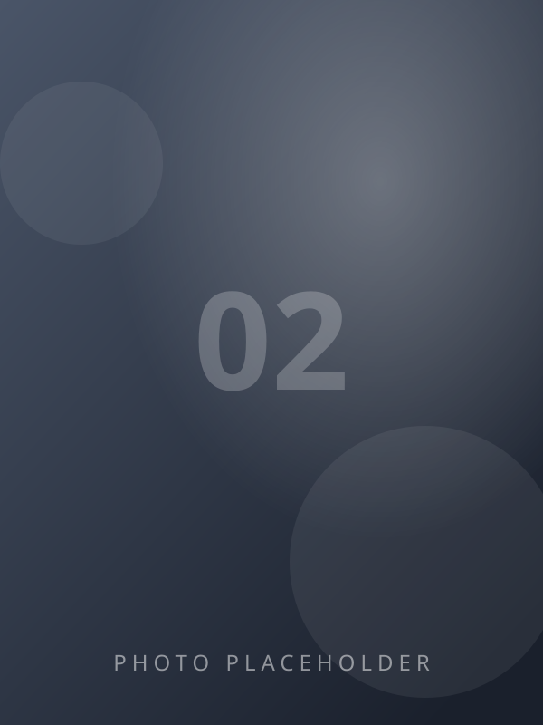
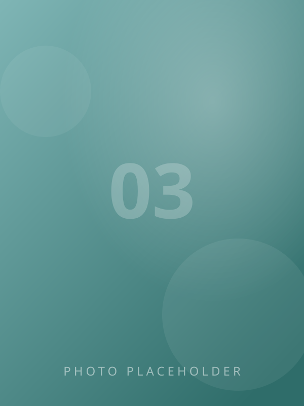
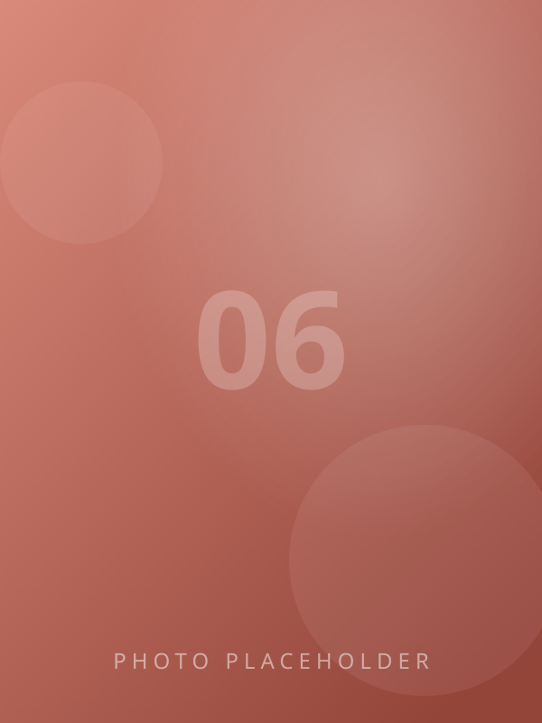
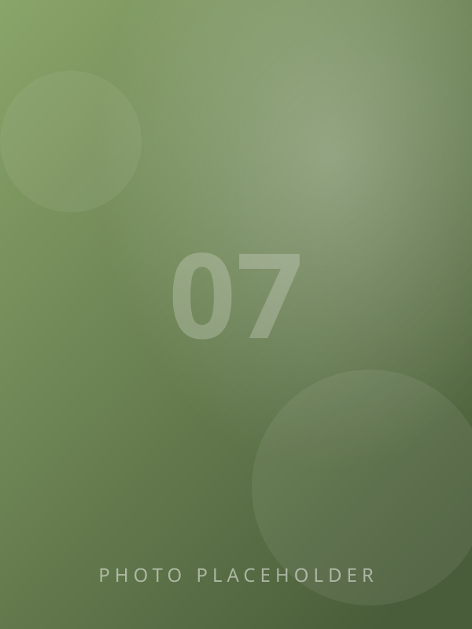

问题拆解
把模糊的大目标翻译成可验证的小步骤，先定义评价指标，再动手实现。
ABOUT
我是林霁，一名计算机专业的应届生，方向是深度学习与图像处理。 毕业设计围绕单幅图像去雾展开：从复现经典方法起步， 到设计条件生成对抗网络（SE-CGAN），再到把模型导出部署成线上推理服务—— 我喜欢把一件事从论文里一路做到能被真实用户点开使用的程度。
比起"跑通模型"，我更在意问题拆解、量化验证与工程落地。 这个页面本身也是我的一次练习：原生 JS + GSAP 手工搭建，无框架依赖， 托管在腾讯云 CloudBase 上。
把模糊的大目标翻译成可验证的小步骤，先定义评价指标，再动手实现。
模型不是终点：容器化、接口化、压耗时，让结果能被别人真正用到。
用 PSNR / SSIM 这类硬指标说话，每一次改动都要有对照实验支撑。
JOURNEY
教育 · 本科
主修课程占位：机器学习、计算机视觉、数据结构与算法。GPA / 排名占位。
实习 · 算法实习生
实习内容占位：参与图像增强方向的工作，负责数据处理与模型评测。
毕业设计 · 在研
SE-CGAN 模型设计与实现，RESIDE / O-HAZE 数据集训练，并部署为在线推理服务（本页可体验）。
WORKS
毕业设计 · 在线可体验
条件生成对抗网络实现单幅图像去雾，Tiramisu U-Net 生成器 + PatchGAN 判别器，并封装为在线推理服务。
项目占位
一句话描述这个项目做了什么、你的角色与亮点。
项目占位
一句话描述这个项目做了什么、你的角色与亮点。
LIVE DEMO — 毕业设计在线体验
模型在 CPU 上推理，输入超过 512px 会自动等比缩小；服务冷启动时首次请求约需 10–40 秒，之后秒级返回。图片仅在推理时临时使用，不会被保存。
拖拽图片到这里，或点击上传
支持 PNG / JPG，≤ 10MB正在去雾…
模型启动中：首次请求需要唤醒服务器，约 10–40 秒
0.0 s
拖动分割线对比效果
LIFE
代码之外：INFP · 坐标 XX · 相机与吉他吃灰中，最近在补的剧和书都记在下面。





CONTACT